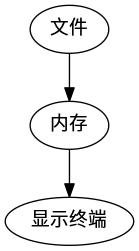

Linux平台C语言乱码
文件加载到显示的过程
只要是用过linux的人都应该遇到过乱码的问题，众所周知，乱码的产生的主要原因是编 码的问题，以B编码方式去读取以A编码方式编码的文件时就会产生乱码，文件读取到显示 的过程可以简单的用下图表表示：

- 第一步是将文件读入内存，这一步可以看作是直接将文件的二进制形式的表示直接复制 进内存，就是将你用十六进制工具看到的那些东西复制进内存，
- 第二步是显示终端将内存中的数据以某种编码方式解码显示出来
linux乱码产生的原因
在linux下显示终端的默认编码方式一般是utf8，而中文windows产生的文件默认编码则 是gb2312，linux首先读取文件到内存,这时内存中的数据是对原始消息使用gb2312编码 得到的,然后显示终端使用utf8解码这些信息,所以自然就无法得到正确的原始信息,也 就是产生了乱码.
如何避免乱码
从上面的讨论可以看出，在linux下要不产生乱码，必须让内存中的二进制数据是对原 始信息通过utf8编码得到的，那么如何保证这一点呢，有两种方式，一种是让文件本身 是utf8编码的，这样读入内存后在以utf8解码后得到的信息肯定一样，也就是不会有乱 码，第二种是直接在内存中转换，假设我读一个以gb2312编码的文件，在内存中得到一 个缓冲区buf，如果你直接将buf传送给显示终端的话，那么显示终端就会以utf8对buf 的二进制数据解码，那么就会产生乱码，因为buf的二进制数据是以gb2312对原始信息 编码得到的，那么我要正常显示，则必须将buf中的二进制数据转换为将原始信息以 utf8编码得到的二进制信息，这里分两种情况讨论:
- 文本文件的编码格式是utf8，这种情况可以直接用c语言读取显示，不会产生乱码， 所以不过多赘述
文本文件的编码是gb2312，那么直接用C语言操作时就会产生乱码，这种情况的解决方 式主要有两种，第一种就是运行程序之前将要操作的文本文件转换为utf8，打开shell， 输入以下命令:
iconv -f gb2312 -t utf8 youfile -c -o newfile
其中youfile是要转换的文件，newfile就是得到的utf8编码的文件，其中c这个参数建议加上， 它可以忽略无效的字符，比如可以忽略utf8文件里的BOM，下面贴一段转换歌词编码的脚本给大 家参考:
1: #!/bin/bash 2: for i in *.lrc 3: do 4: is_utf8=$(file "$i" | grep 'UTF-8') 5: if [ -z "$is_utf8" ] 6: then 7: iconv -f gb2312 -t utf8 "$i" -c -o tmp_lrc && rm -f "$i" 8: mv tmp_lrc "$i" 9: else 10: continue; 11: fi 12: done
功能就是将一个目录里扩展名为lrc的文件编码转换为utf8
这种方式有个弊端就是文件必须提前转换编码，如果程序是给别人使用，我们不可能要求别 人先将文件的编码转换好在运行程序，那么有没有什么办法可以直接在C程序里进行转换呢？ 下面就看看如何在程序中进行转换，先看代码:
1: #include<stdio.h> 2: #include<iconv.h> 3: 4: #define MAXLINE 1024 5: int main() 6: { 7: FILE *fp = fopen("she.lrc","r"); 8: 9: char buf[MAXLINE]; 10: char dest[MAXLINE]; 11: char *in = buf; 12: char *out = dest; 13: fgets(buf,MAXLINE,fp); 14: 15: iconv_t cd = iconv_open("UTF-8","GBK"); 16: int lenght = MAXLINE; 17: iconv(cd,&in,&lenght,&out,&lenght) 18: iconv_close(cd); 19: fputs(dest,stdout); 20: printf("\n"); 21: return 0; 22: }
上面的程序只是为了测试，所以有些错误处理代码去掉了，其中she.lrc是一个以gb2312编码 的歌词文件，用到了3个函数，icon_open,iconv,icon_close,这三个函数是libiconv库的接 口，这三个函数的详细介绍清参考:
这三个函数的帮助文档也可以直接man，很详细，使用的顺序也是先调 用iconv_open创建描述符，然后调用iconv转换，最后调用iconv_close 关闭描述符，函数原型为：
1: iconv_t iconv_open(const char *tocode, const char *fromcode) 2: size_t iconv(iconv_t cd, 3: char **inbuf, size_t *inbytesleft, 4: char **outbuf, size_t *outbytesleft); 5: int iconv_close(iconv_t cd);
其中fromcode和tocode是编码方式，shell下输入iconv –list会列出支持的编码方式。